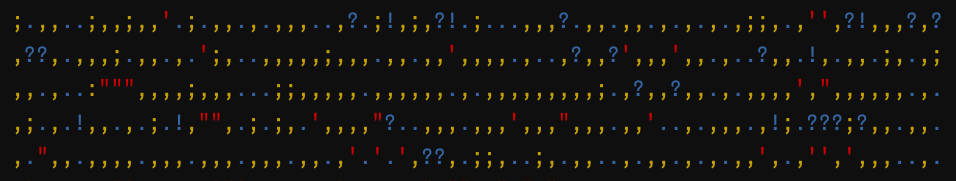
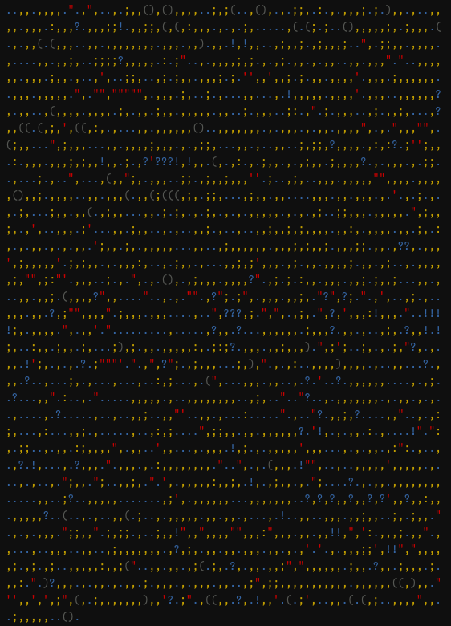

extract_punct <- function(
text, # input text
sort = FALSE, # order the characters?
vec_only = FALSE, # return as char vector?
width = 80, # width of output
colour = TRUE # colour output?
) {
# Extract punctuation with regular expression
punct_rx <- "[\\.,:;!?\"\'\\()]"
matches <- regexpr(punct_rx, text)
punct_vec <- regmatches(text, matches)
# Sort alphabetically?
if (sort) punct_vec <- punct_vec[order(punct_vec)]
# Early return of character vector
if (vec_only) return(punct_vec)
# Colour the characters
punct_vec <- sapply(
punct_vec, switch,
"." = crayon::blue("."),
"!" = crayon::blue("!"),
"?" = crayon::blue("?"),
"," = crayon::yellow(","),
";" = crayon::yellow(";"),
":" = crayon::yellow(":"),
"\"" = crayon::red("\""),
"'" = crayon::red("'"),
"(" = crayon::silver("("),
")" = crayon::silver(")")
)
# Print without colour
if (!is.null(width) & !colour) {
cat(names(punct_vec), sep = "", fill = width)
}
# Convoluted colour printing, requires flattening a matrix
if (!is.null(width) & colour) {
div_size <- length(punct_vec) %/% width * width
mat_flat <- c(rbind("\n", matrix(punct_vec[1:div_size], nrow = width)))
leftover <- c("\n", punct_vec[div_size:length(punct_vec)])
cat(mat_flat[2:length(mat_flat)], leftover, sep = "")
}
}
tl;dr
I wrote an R function to extract only the punctuation marks from a provided text. It prints prettily to the console, but you can also take a character vector away for further analysis.
Punct rock
A few years ago Adam J Calhoun did a small but really neat thing: extracted and presented only the punctuation from some books. It appeared again recently in my Twitter timeline.
I love the aesthetic of the neatly printed characters, but it also tells us something (obvious?) about writing styles.
Long story short: old-timey folk often wrote convoluted sentences; literature and essays from a hundred or more years ago are especially rich with semi-colons, commas, more commas and of course, as the audience is well-aware, even more commas, which to modern eyes can be a little tiring; certainly it’s a style that is out of fashion, but was pretty hip for, let’s say, Herman Melville, when writing his behemoth of a novel, Moby Dick; Or, The Whale.
Whereas Hemingway was terse.
You’ve been punct
So I wrote a small, opinionated R function called extract_punct() that grabs the punctuation characters for a given text.
Someone has probably done this in R before. I saw that Julia Silge wrote a post on quantifying punctuation like Calhoun’s original, but it doesn’t involve printing the characters.
The purpose of this post is just to show how to do the extraction and print it nicely to the console, though the function allows you to take away a character vector for further analysis.
Functuation
Below is the definition for extract_punct(). You supply your content to text, and then you set the arguments:
sort = FALSEto return the punctuation in the order it appears in the text, orTRUEto order it ‘alphabetically’vec_only = TRUEto early-return the punctuation characters as a vector for you to do with as you pleasevec_only = FALSEto print the results to the console withcat()widthto decide where the line breaks will go in the printed output (defaults to 80)colour = TRUEto have each punctuation character returned in colour thanks to the {crayon} package by Gábor Csárdi1, orFALSEto return without colour
There’s no defensive programming or testing here; this is just for fun for the purposes of this blog post. Maybe it’ll work on your machine?
Note that I’ve selected a subset of possible punctuation marks. There’s no reason why you couldn’t update the punct_rx object, which contains a regular expression, to include more marks. You could even use R’s built-in "[[:punct:]]" declaration to capture them all.
I decided to colour by ‘type’ of mark: terminal (period, exclamation and question), ‘continuing’ marks (comma, semi-colon and colon), parenthetical (open and close) and quote signifiers (quotation marks and apostrophes, recognising that apostrophes are more likely to be used for contractions).
There were a couple of technical annoyances to deal with in the function definition; let me know what you would improve.2
{gutenbergr}, dead ahead!
Let’s inspect the punctuation from some books on Project Gutenberg, ‘a volunteer effort to digitize, archive, and distribute literary works’.
Helpfully, we can interact with Project Gutenberg’s library via the {gutenbergr} package by David Robinson.3
library(gutenbergr)
library(dplyr, warn.conflicts = FALSE)
library(stringr)
sample_n(gutenberg_metadata, 5) %>% select(1:3)# A tibble: 5 × 3
gutenberg_id title author
<int> <chr> <chr>
1 8484 "Scientific American Supplement, No. 430, March 29, 1884" Vario…
2 49536 "Syyn sovitus: Murhenäytelmä yhdessä näytöksessä" Körne…
3 32143 "The Romantic Analogue" Skupe…
4 5129 "The Prodigal Judge" Keste…
5 22791 "King Henry the Fifth\nArranged for Representation at the… Shake…You could filter for a particular author or title, like Franz Kafka.
gutenberg_metadata %>%
filter(str_detect(author, "Kafka")) %>%
select(1:3) %>%
slice(1:5)# A tibble: 5 × 3
gutenberg_id title author
<int> <chr> <chr>
1 5200 Metamorphosis Kafka, Franz
2 7849 The Trial Kafka, Franz
3 16304 Der Heizer: Ein Fragment Kafka, Franz
4 19638 Auf der Galerie Kafka, Franz
5 20045 Großer Lärm Kafka, FranzI’ve chosen Edwin A Abbott’s Flatland (1884) as our example text. It’s relatively short, so we can get the gist of the output from extract_punct() without printing hundreds of lines. Also it’s a really fun little book that blew my mind.4
You can get a Gutenberg book by finding its ‘Gutenberg ID’ to input into extract_punct()? One way is to look at the URL for a given book on the Project Gutenberg website, another is to search the gutenberg_metadata()5 dataframe. I’ll also load {dplyr} and {stringr} for wrangling.
id <- gutenberg_works() %>%
filter(str_detect(title, "^Flatland: A Romance of Many Dimensions$")) %>%
pull(gutenberg_id)
book <- gutenberg_download(id, verbose = FALSE)
book %>% filter(!is.na(text)) %>% sample_n(5) %>% select(text)# A tibble: 5 × 1
text
<chr>
1 Chief Clerk of the High Council. It was found recorded on each occasion
2 with the hinder half green. Look at her from one side. Obviously you
3 investigations indirectly by making them liable to a heavy tax, the
4 there could not be a doubt of it. Then followed a dialogue, which I
5 _I_. “More merciful, more loving!” But these are the qualities of Right so, we can pass the text to the extract_punct() function to return all the punctuation in the order it appears, with linebreak every 70 characters so the text fits the width of this blog.
extract_punct(book$text, width = 70, colour = FALSE),,...,,,,,,,,.,,,,.:.,;,..,.;,,(),(),,,,..;,;(..,(),.,.;;,.:.,.,,,;.;.
),,.,..,,,,.,,,.:,,,?.,,,;;!.,,;;,(,(,:,,,.,.,.;,.....,(.(;.;..(),,,,,
;,.;,,,.(.,.,,(..,,.?,?.;;..,,.,,,,,,,,.,,,.,,).,,.!,!,,..,;,,;.,;,,,;
.,.,,,,,....,,.,,;,..;;;;?,,,,,.:.;.,,).,.,,,,;,;.,.,;.,,.,.,,..,,.,,,
.;..,.,,,..,,..;,,.,..,,,..;;,..,;.;,,.,,,;.;.;,,.,,;.;.,,.,,,,?.,,,.;
,,,,,,..,,,.,,,,,.,,.,..,;.,.,,,.;,..;.,...,,....!,,,,,.,,,,,.,,..,,,,
,,?,.,,..,(,,,,.,,,,.;,.,,.;,,.,,,,,.,,..;.,,,..;:.,..;.,,,..,;.,,;,..
.,?,,((.(,;,;,((,:,.,,.,,,.,,,,,,()..,,,,,,,.,.,,,.,.,,.,,,,,,.,..,,..
,.(;,,...,,;,,,...,,.,,,,;,,,.,.,;;,...,,...,,..;,;;,?,,,,.,:,:?.;.;,,
.:.,,,.,,,,;,;;,!,,.;.,?,???!,!,,.(,.,:.,.;,,.,.,;,,.;,,,,?.,.,,,.,,.;
;,..,...;.,..,...,,(),;,.,,,..;;.,;,,;,,,,..;..,;,..,,,.,,,,,,,,,.,,,,
,(),,;.,,,,..,,.,,,(.,,(;(((,;,.;;,...,;,,.,,....,,,.,,.,,,.,..,.;.,.,
.;,...;,,.,,(.,;,,...,,.;.;,.,.;,,,.,,,,,,,.,.,.,;..;;,,,.,,,,;.,,;,,;
,.,,..,,,.;...,,.;,,..,.,..,,;.,..,..,,;,,;,;,,,,.,,:,.,,,,,,.;,.:,.,.
,,.,.,.,,.;,;,;,.,,,,,...,,..,;,,,,,,.,,,;,;,,;.,,,;;.,,.,??,.,,,.,;,,
,,,;.;,;,,.,.,,,:,..,.;,,.,...,,;,;;,,,.,;.,,.,,,,;.,,.,;..,.,,,,,;,;;
,;:..,,,..;.,.,!,.,.(),.,;,,,.,,,,?,.,;.;.:,,.,,,.,,;.,;,.;...,,...,,.
,,;.(,,,,??,;.,....,.,.?.,??;.;,.,,,.,,;,.!?!,?;.,.,,..,;.,..,,,.,,.?,
;,;,;.,.,;,,,.,,.,..,..,,???,;.!,,,.,;,.,?,,,,,:!,.,.,..!!!!;,.,,,,.,,
.,...,.........,.....,?,,.?.,..,,,,,,.;,,,?.,,.,..;,,..,,!.!;,..:,,.;,
,.;,...;,,,;,.,,.,.;.,,.,,,,,:.;:;,.,,,.,,,,,,(.,,;,;..;,.,.;,??,.;,,.
!;,.,.,.?.?,,.,.,,,?,;.,;,,,..,:..,,,,),,,,.,..,,...?.,,,.?..,...;,.,.
..,...,...,;...,.(),...,,,.,,..,.?....?.,,,,,,....,.,;..?...,,?.:..,.,
.....,,,,,.,..,,,,,,,,..,;,..;..??..,.,,,,,,.,.,,.,.,..,....,.?.....,.
.,..,,;..,,?..,,.,...:.....?.,..,?.,,;,?....,,,..,.,:;,...,:...,,;.,..
...,.,:,;....,,;;,,.,,.,,,,,,?..!,.,.,,..:.,....!!.!.,.;;..,.,,.:;,,,,
,,.,,..,,,...,!,,,.!,;.,.,,,,.,,,,...,,,,,.,::.,..,.,?.!,...,.?,,,.,.,
,,.,.:,,,,,,,,.,..,,.,.(,,,.!,;,..,...,,,,,,;,,,.,...,.,..,.,;,,.,;..,
,;,.;.,,.,,,,,:,,;,.!,.,.,,.,.,;....?.,.,,.,,,,,,,,.....,,..;?..,,,,,.
......,;,.,,,,,,...,,,,,,,,.?,?,?,,?,,?,??,,?,,:,,;.;.,,,?..(..,....,,
?(.;..,.,,,,,.,,.,,.,...,.!..;,..,,,.,,;,,..;,.;,,.,.,.,.,,,.,;;,,..;,
;;.,..;,,!,,,,,,,,?,,,,:,,,,.,,.!,!,!,,.:.,,,;.,,,.,,...,..,,,..,,.,;,
.,,,,,,.,?,;,.,,.,,.,,,.,,.,.,,.!.,.,,,;;,,,!,,,,,,,,..,;.,;..,,,,,:,,
;(..,,.,,.,;(.;,.?,.,,.,,;,.,,,,,.,;,.?,,.;,,.,;.,,:.,.)?,,,.,.,,.,.,,
.;.,,,.,.,,,.,,..,;,,;;,,,,,,,,,,,.,,,,,,((,),,.,,,,..,,;..,(,.;,,;,:,
;(,,,..??.,(),,,?,.!,,.,()..(.;,..,,.(.(,;..,,,,,,,.;,,,,,.I passed colour = FALSE because the blog can’t render the colours. Set colour = TRUE to have the characters returned in your console with a different colour for each type of mark. That looks like this:

For fun, we can also get the same output as before, but ordered by character.
extract_punct(book$text, sort = TRUE, width = 70, colour = FALSE),,,,,,,,,,,,,,,,,,,,,,,,,,,,,,,,,,,,,,,,,,,,,,,,,,,,,,,,,,,,,,,,,,,,,,
,,,,,,,,,,,,,,,,,,,,,,,,,,,,,,,,,,,,,,,,,,,,,,,,,,,,,,,,,,,,,,,,,,,,,,
,,,,,,,,,,,,,,,,,,,,,,,,,,,,,,,,,,,,,,,,,,,,,,,,,,,,,,,,,,,,,,,,,,,,,,
,,,,,,,,,,,,,,,,,,,,,,,,,,,,,,,,,,,,,,,,,,,,,,,,,,,,,,,,,,,,,,,,,,,,,,
,,,,,,,,,,,,,,,,,,,,,,,,,,,,,,,,,,,,,,,,,,,,,,,,,,,,,,,,,,,,,,,,,,,,,,
,,,,,,,,,,,,,,,,,,,,,,,,,,,,,,,,,,,,,,,,,,,,,,,,,,,,,,,,,,,,,,,,,,,,,,
,,,,,,,,,,,,,,,,,,,,,,,,,,,,,,,,,,,,,,,,,,,,,,,,,,,,,,,,,,,,,,,,,,,,,,
,,,,,,,,,,,,,,,,,,,,,,,,,,,,,,,,,,,,,,,,,,,,,,,,,,,,,,,,,,,,,,,,,,,,,,
,,,,,,,,,,,,,,,,,,,,,,,,,,,,,,,,,,,,,,,,,,,,,,,,,,,,,,,,,,,,,,,,,,,,,,
,,,,,,,,,,,,,,,,,,,,,,,,,,,,,,,,,,,,,,,,,,,,,,,,,,,,,,,,,,,,,,,,,,,,,,
,,,,,,,,,,,,,,,,,,,,,,,,,,,,,,,,,,,,,,,,,,,,,,,,,,,,,,,,,,,,,,,,,,,,,,
,,,,,,,,,,,,,,,,,,,,,,,,,,,,,,,,,,,,,,,,,,,,,,,,,,,,,,,,,,,,,,,,,,,,,,
,,,,,,,,,,,,,,,,,,,,,,,,,,,,,,,,,,,,,,,,,,,,,,,,,,,,,,,,,,,,,,,,,,,,,,
,,,,,,,,,,,,,,,,,,,,,,,,,,,,,,,,,,,,,,,,,,,,,,,,,,,,,,,,,,,,,,,,,,,,,,
,,,,,,,,,,,,,,,,,,,,,,,,,,,,,,,,,,,,,,,,,,,,,,,,,,,,,,,,,,,,,,,,,,,,,,
,,,,,,,,,,,,,,,,,,,,,,,,,,,,,,,,,,,,,,,,,,,,,,,,,,,,,,,,,,,,,,,,,,,,,,
,,,,,,,,,,,,,,,,,,,,,,,,,,,,,,,,,,,,,,,,,,,,,,,,,,,,,,,,,,,,,,,,,,,,,,
,,,,,,,,,,,,,,,,,,,,,,,,,,,,,,,,,,,,,,,,,,,,,,,,,,,,,,,,,,,,,,,;;;;;;;
;;;;;;;;;;;;;;;;;;;;;;;;;;;;;;;;;;;;;;;;;;;;;;;;;;;;;;;;;;;;;;;;;;;;;;
;;;;;;;;;;;;;;;;;;;;;;;;;;;;;;;;;;;;;;;;;;;;;;;;;;;;;;;;;;;;;;;;;;;;;;
;;;;;;;;;;;;;;;;;;;;;;;;;;;;;;;;;;;;;;;;;;;;;;;;;;;;;;;;;;;;;;;;;;;;;;
;;;;;;;;;;;;;;;;;;;::::::::::::::::::::::::::::::::::::::!!!!!!!!!!!!!
!!!!!!!!!!!!!!!!!!!!!!!???????????????????????????????????????????????
??????????????????????????............................................
......................................................................
......................................................................
......................................................................
......................................................................
......................................................................
......................................................................
......................................................................
......................................................................
......................................................................
......................................................................
..................................................................((((
(((((((((((((((((((((((((((((((((((((((((()))))))))))))))))Full stop
So that’s the general gist.
Here’s a few more books from Project Gutenberg. Expand to see the punctuation for each one:
Pride and Prejudice by Jane Austen (1813)
extract_punct(
gutenberg_download(1342, verbose = FALSE)$text,
width = 70
)::..,:...:,:.,..;,.,.,.,,,.,.,,;.,;.,,;);,;,,,;,.,);,,,,,.;.,;,,,,,,.,
,,.;,,.,,,,,,;,.,.,,,.,,.,.,;.,.,..,,,.,.,;,,..;),.,,,,,,,,.,,.,.,,;.,
,..,.;.,,.:.,.,,,.;.,.;,,.,.;.,;)(),.,.,.,.;,...,,,,,,,,,,,....,.,,.(,
.,.,.,,.,.,.;.,,?,,.,,,.;.,,..,,.(;,,.,,(,)().;..;.,..,,..,,.,,,,.,,..
;,,.,.;,,,,,..;,..,,,.;,,,,,.,,,,,,.,?.;,.,.,...:.........,...........
?,.....!......,..:.,.,,..?.,..?,:..,;,.,.?.?,.?..??,..,,.,.,,,.,..;.,,
;..:.,;...,..,,.,.,..,..,.::.:....,;..,..,,,...,..,,.,.,,.,;.,.,;...,,
..!?,,?,,,..;,...;,.,..,.,,,.,,.,.,,..::..,.,;,..,.;.,.,..,;,,;.,,,.;,
.:.;..;,.,,.,.;,,,,.,;,,,..:,...,,.,..,;..,......,!;.,,,,.:.?,:.,..,,.
..,.;,.,.,.;.,,,;.;.;,..,,,!.,!....,,,;.!!,.,..,,!,...?.?.,.!,..;.:,!.
,,,,.;.,;,,.;;;;,;.;..,.;,,,.;,;,.,.;,,.,,.,,;,.;..;,;.,,...,.;.:..,.,
;,,,,,,,.,.,.;.,,;,,..?,,,:!,,.?,..:.,.,;.,..,,;....,.,,,,..,,,,,,,,.;
.,,,;.;;....,.;,,,,,;,,,..,;.,.,;..,,,.,,,,,,...,;,;,.;...;.:,,,,.,,.;
.,,..:;,..,;,:,.;,...?.,.,:.,,,,,,?;..,,!!,.,.,.,,,,,.;,,.,,,,..,,,,.,
:.,,,,.,?.,.,;.:;,,,.,,,,,..,.,;,..,;?,,,..,.,!,..,...!??.;,,..,;,:...
,,,...,.;,,.,,,;,.;.....,.,,.,,,..,,,.,.,,;,,....,;,.,;.;.,,,,,,;..,.!
.,?,;,.,..,,:.,.;....,,,.:,,...,,,,,.,.,.,:.,,..,?,;,;.,,.,,:,,,,.,,,;
......,.;,,,..,,.,,,,.;.,.,.,.::.,.,..,,;,.,.;..,,,,.,,,,..,!,,,.,...,
..,,?.,.,.,,,,,.?;,,.,;,.,,,,.,,,,?,,,,,.,.;;..,.,,...!...,.:,,.,;,,??
..!.!,.!,.,.,.;..,,.;,.,,,.,...?.,.,,.,.,;;,...,.;,.;...,.:..,..,..,,;
,.,;.,..,..!,,..,,,,....,,,.,,.;,..,.,.;.,..,.,..;.,,,,,,,,,.,.,.,,...
,.,,!;.?,,;,.;,,,;..,.,,,,!,,..;.,.,,,,..;..,;.,,,,,..,,..;.,..,.,...,
,..,..,.,,,.!...!,.,...?.,,.?.,,;.,.,,..,.;.,,..?;,,.,.,,,,,.,..;.;,,,
,..,.;,..?,.,.,,,...,.,..,.,,,,?,,,,,,;..,,.,..,;,..,.,,..,,.,.,,..,;,
,?,.,.;,.;..,;,.,.,.,,,,,,.,.:,.?....,,,...,,,...,..,,,..,..:..,,;..,.
,,.;,..;,.,...,..,..,..,,,.,,!!!..;,,,?;.,,,.,;..,.,.,,,,..,:.,,,..,,.
,,.,.,,:;.,.,.,..;,..,..,,.,.,.....,...?..,,..,...,..,,.,.,..,;..,,.,,
.,;,.;,.,;;;.,;....;,.:,,,,,,,..,,,;,,.,;..;;.,,.,;...,!!....;.,:;.,.,
.,;..:;,,.,.,,.?,,,,;,:.;,,,,.,;,,.,,;,,,,,,.,,.,.,,.,,.,,.,.,.?,,..,.
..,.,...,,.,.,,.;,,;.,,.,.,,..;.,.,..,,.;.,,,,,,.;,..,.,;,.,,,,,..,,,.
,.,,;.,,,..?.;,.;.;,..,.,;,..;,,.,,:..;)...,,,?.,;,,,.,..,;,,...;;.;,,
.;,,,,,;,.;,..,;..,,,,,;,..,.;,:;.;,,,.;,,.;,.,,.,,,,,...;,,,.,,..:,;,
,.,...,;,.,.?..,..,,..,,,.,,.,,,.;,,,.,,,.,,.,,,,,;,...,,,.,..,,;,..,,
,;;,,,,.,,,;,,.,,.:,,,;,,,:..,;,,,..,;..,,,;,..,;,,,,,...;.,,.,.,.,,.,
,.,...,.,..,,;,,,..,.;....,,,,..;,.,;.,,.,.,,.,.,.;,.!...;.!?.,,,,,,.,
.,!.,,.,?,.,,..,,,!,,,.,.,,!.,,.,:,,;..,;,,.!.,.,;.;.?;,.,,,,;.?.;.;.,
,.,,.,?..,.;...;,.,,...,,.,,.,,..,.,.,;,..,.,.,..;,,,;,;,,.,,.....;,,;
.,,.:.,..;.;,.,,.,.,?.,..,.,?..;,,.;,,.,,;,.,...,..,..,.,.,,,,.,.;.,..
,;,,.,,;,;,,.;!,,.,,,,,,;,.,.,,;,.,..,..,...,,.,,,.,,,.,;,,.,,.;,;,,.:
,,..,,,,,,,:.!!.,,,.,..;,,,..,,,,.;;.,.;,.,?,.,,.,.,.;,.,..,,,.;.,,.,,
;,.,..:,)!,:..;,,,,....?!.;.;.?.,,,;.?,?.,.?,.?..,;,.,.,,;,,.,,,,;,.;,
,..;,.,.;,,,.,,;!....,.;,.,,,.,.,.,.;,,..;..,....,,,.,.,.;,,.,.,.!,...
...;.,,,,,,,;.,.,;,.,,,.;.,;,.,.,..,..,;.,.;(...,;,.,;,,.,;.,.,;....,.
.,...;..,,.;,.,,,;,.,;.,.,,,.,,.,,;.,..,,.,;.,.,,,,,,;,.;,,..,.,.;;..,
..,,..;.,.,..,.,...,.,!,;.,.;,..,,.,;,.:...,,..,,?,,!.,,,..,,,.;,,.,,,
;.,;.,,,.,,,,(;;,.!,,.,,.,,.;,.;,.,(,,...,;.,,..,..,.,,,;.,,.(.,..,.,,
,,.,,,,,,,,;,.,.,.,.:,.,;,.,.,,,..,..,.!;,.,,,...;,,,.,,,.,,.,.,.,,,.,
,,,..,,,,.;..,.,...?.....,...?,..,,...;.,,.,,;.,..,;,,.;..,.,!,:,;,,.,
..,,.,..,.....,.,.,,.,,.,,.:,,,,:,,;,.,,,.,;.,;,..,,,.;,,...,.,,,,,..,
.,.;,,,:;.:.,,,,,;,;.,:,;.,,,.,;,.;:.,.,.,,?..,;,,,.:,.,.,..?..;.,.,,.
;;,.,,?,;;(!?,...,..,;.,:,,;.,,;,,..;..:,,?,,,,?,.;.,..;,.,,;,,.,,.,.;
,..;,.,,.;:..,.;,.,,;,.,,...;,;,.;,.;.,;.:.,,,...;...,,.:,,.,.,.;,;,.,
,,.,;,.,,.;,,?.,,..;,.,;.,,.,.,:;,,....:;,,.;,,.?;,,.,,,..,.;.;..;,.!,
.:...,,,.,;,,!.:;,.,,;,,,,..;.;;;,;;...:;..;,,!:;.,;..,..;.,,,,..,.,,,
,,,....;.,....;,..,,.,,.,:;.,,....,.,.:.,...,.,..,,,,..,.,?..,;?,.,,.,
,,.,...,..,.;,,,.,;.,;,,;,,;,,!...,.,...,,,.,;..,.,,,,.,;,..!,..,;,.,;
,.,;..,,.,;..,......,..;,,.?;.,,.;..:,,,.;..,?;,.,.,;..;,.,,;,,.,,....
.,.,,....,;..:,..,.,,.;,.,,.,,..,,...,..,.,....,..,,.,..,,.,,..,,:.,..
,,,.;,,;.?,!..?.,.,.,,.;,!,,..?.,,,,.,.;,,.;,.,.,.,,;,...,.;,....,,..,
;..:?..:,,;.,.:,..,,,,,.,....;,;,,,,?..,.,,...,.;,..;,;,,,,,.,,..,..,.
,..:,.:.;,.:,,;.,.,.;,,;....,,,,,.,.:,...,;.,;,.:,,.,,,;,.,,,,,.,;.,.,
,,.,,,,..,.,..,...,;,..;,,..,..,,,.;,,,,..,;,.,,.;,,..,.:.,,,.;,.,;,.;
...,.,,,..,,,,,,;,..,,..;,,.,,,.,,.,.;,,.,,...,.,??;,.,.,??,,?..?..,,,
.,;.,.,,,.,;,.,.?,..,,..:.;,.,,...,.,,..,,:;.,,,.;,,.,;.,,..,,,,.;,.,,
.,.,,.,,,,,,.,.,,..,,,,.....,,,,.,;,,,.,..,,;,,,:.,!,;,;.?,!!....?,.,.
..;,,.;.,.:,...,,.,..(?,,...,,,,,....,,.,;.,.,.,.,,.,.,,,,,,,..,,,,,.,
,.:,;.,.,..,,,,.,,.,.,,.,,.,,.,,.,..,,,.,;,...,,.,,,?,,.,..?..,..?,?,,
...,?.!!.,.?.,.,.,,.,..,,.?,,,!!?,.,...,.,.;.,..,.;..,,..,,,..,,,.;,,,
,,...;,.,,;,,.;:,;.,.,,.,..;,..;,,.,,,.,,.:;,,..,:,.,,,..,,.;,,,,,.;,:
..;,.,,,.,,,.,.,.,,,,,,,.,.;.?:;.,.:.,.,;,,..,.,.,;,.:;,,,;,.;,,,?,.!,
,,,...,;.,..,,.,,,....,;.,,.,,...,;,,.,,,,.,,.,,.,,,!,...;,,,?.,?,.,.,
,,.,..,..,.,,,.,,,:;,,,.;..,.,.;,,,,,.,.,,,,.;.,;,.?;..,,.,.,..;.,....
,,...,.??.,..,,;,..,......;,?,,.,,:.?..,,,,.,;,.,.,;,,,...;,.,;,:,,.,.
,,;,,,.,,,:.,.;,.,,,.,;,.,.?.,.,,,,,.,,?,,.?..,..,.,..,.??.,.,.,.,;?,,
,,..;.,.,?;.,,...,...,,!.,..?,...,;,...?,.,..,.??.;.,,.,.,.,.,......,,
;.,;,.,,,,,.,.,;,.;.,,;..,..,,,,,,..,,,;,.,;,,,,.,...,....,.,.,,,.,,,;
.,;...;,,,.,,.....,..,..!,,,,,,.,,,?,,,..,,,,.,..?,,.,,,...??,,?!.,...
!.,!.,,,.,,,,.??;,,,.;.;.,,,,,;.,,,.,..,,..,,!.,,.,.,:..:;.,,.,.,,.,.,
:.,...,,.,.,,,,.,,,,,,,,.;.,,,,,.,,,,,.,,.,,,,...,,.,;.,;,.,.,.,.;.,;.
,,.,,,:.,.,,.,,.:,...,,,,...,,.,.;,.,,,,.,.;..,;.;,.,,..,,,,..,.;,,...
,,..;..,,.,,,.,.,.,,.,..,..,..,.;;,.;,,.,,.;,..;.,;..;,.,,....,,,.,;,.
..,,.,.;,,,.;,.;,.;..,,.,,!,,,,,;,.;,.,;,.,,,.,....,,.:...,,,.,..,,..,
;.,,....,.,..;.,;,,.!;,:,.;.;,,;;,;,;..,,!!,.!..,,.,.;.,?;..,,.,.;,,..
;,,,.,,,,;,.,;,,.;.:.;,,.;,.,,;.?..,.;!;,...,;,,.,,;.,....:.,.,,,,,.,.
.....,,.,..;..!.,.;;,:;,..;.:,;,;.,,.,;,;?,;.,,.;,.,.,,,,..;,,,,,.:...
;.,;..,,;..;,.,.,,.,..,,,;,.,,.;.....,..!,.,,,,.,,.,,.:,,.:.!!!,,!,,.,
,,..,,,,,,,,.:.,,,,,,,.,,?,,,;,.,,,.,.,;!.,!,.,,,..,.,,..:!;!.,,..?,,!
,;,,!,,..?.!!.;!.!,;:;,,,;,..,,,.,.;,,,;:,,,;,.,,;;,,..!,,....,,..,,,.
.,,.;,,.;,..;.;.,;.,.,!?.,.,.!,,,,..;.,,,!.!!.,..;.!!....,,;.,.,.,,...
..,.,...;,,,..,.....,.,..;.,.!,..,,;,,.,?...;,:.,;,,..,,.,.,,,...,.;.,
.:...,..,,.!.?;.,.,!!.,...;.;.,,,.,..,,..,,,.,;,.,.,.,.,,,.!?..,,,,.,,
;;;;,..,,?.,,;,..;....,.;,,;,.,..,.,,,.:.,,..;,..,;,.,,,;,,,,,,,.,,,;.
,?.?,.,!,??,,.,.,,;,;,,,.,.,,.,,.,.,.,;.,..;,,;,.:.,.,.,..;..;.,.,,,,,
,,.,.;,;,,,,.,,.;,,,:;,,,,,.;.;.,,;,,;,.,,.,;,,,,.;..,;,,,,;,,,,:;;.,.
,....,,,,.;,.,,..,,;,;,.,,?...,:..,..;..,.,.,,,?,;,,.,:.,;,,,.,.,,,.,;
,.,.;!,,..;.;,.,.,,;,,;.;,,.,!,.,;.,;,.!..,.,.,..,..,;....,,,;,,....?,
!:..:,.?,;,,,..,,,,,.,.:,..,.,,..,,.,.,.,,,,.....!,..;,,;,.,...,.,.;,,
.,...,.,..,..?!!!;,,:.,;,,;,.;,,.;,.;.,.,,,.,;,.,,,.,,.,;,.!!!,,;..,!!
.,!.,,:;,,.,.,.;.,.,,,;,,,,..;,,:,,.,,.,,,,,,,,,,.,,.;,;;,,....;,,,.,,
;.:,...,,,;,,,.,..;?...,,,.,..,,;,..,,..;.,,,?;.,,;.;;..,.,,.,...;.;.;
.,,;,..;.,,.?:,.,.,.,.,.,..!.,.;,,;,,,,.,;,.,.;,,..;.;.,,,.,,.,,..,.;;
.,,.,..,..,,.,...;,,;,.,...,.,.;.,,;,.,.:.,.,,,,..;,,,,,;,,;,.;..,,,,.
;,,,.,,,,,.;,.,,.,,,,,,.,,,,.,,....,.,;,,.,,,..;.,,;,,,,;;,.,.,;,..,,.
,,,,,,,,,;,,,,,,;.,.,.:.,,.,.,,.,..,,.,.,.,;,;,,,.,;::,,,,.,,;.,;,.,.;
,..,.;,,.,;.,,,;,,.:;;,.,,,,;,,,..,,,.,.,,,.;,.;,:;..,.!..,,.,.;;,,.;,
,;;.,,;,!,.,;.,..,..,;,..;;,,..;,..,,,,;.,,;.,,,),.,;,......,,,.,,.,.,
,.,.,,..;,,.,,,....,;,,!:,,,.;.;,,,,.,..,.;,!,;,,,,..!;,;;.,,.,,,.?,..
,.:,..;....,!,,.,,,,.,,,;?..,,..;.;,;,,;,,,;;,,,,,,!,,.,..,,,,,;,,,.,.
,,,,,,.;,....,;.,,,.,;.,.,!!,,;;,,.,,,.,.,.,,.?;;.?.?;.,;,,.,;,,:.,;.,
.?,.?,.,.?...?,.,!.,,;,,??,..,?,.,;,,,.,?,,..;,.,,,,?..,,?,?.;.?.,.,.;
,,.??,...,;,,...,.,,.;.,.:;,,,,,.,.;,.,,,,,;,,,,.,.?,?.,.,?,..!?!,,,.,
,,.,;,,.,,,.,,.?,.;!,?;.;,,.,,.;,.,.,.;.,..;,,,.!.,;,,,;,,,.,.,,,.,,,,
.,,:,,.,..,;.,,,.??,,.,:,??;,,.,,?,..,..?,??.,.,!,,,.?.,:,,,.,,,,,..,,
.;..,.,..,...!,?:.,.....,,,.,.:,.,,..,,,..;,,,.;,.:..,,;,;.,;.,..,..,,
,.,,,,;.,;,,,..:,.;,,,;,,.:,,.,,...;.,,,;,;..;..,,;,:,,,,.,,,,;,.,:.;,
,..,:,?,;.,,.,.;,;,..,;..,;.;.,,.,.!.,...,.,;.,,.;,,,....;;.,;,..,.!..
?;,,.,,,,.,!,,,,!!.,,,.,,,...,,,,,,,,.,,;;,,,.,,.,,,,,,?;.,.,,,,,.::.,
:;,,,;,,,,,,.,,,,.;..,...??,.?;.!.,.,,?.!!,:;.!,.,.!.,:.!?..,!..,,,,,,
?,,...,.!!!,:,.,.,,.,.,.?,,.,..,...,,!,.,..,!,.,..,?,.,!,.;,,,.;.,,.,?
?..,,,.,,,:...,,.,..;,..;,.,,......,.,,,.,.;,,.,;.,.;.;.;..,,.,,,..,..
,,,.;,.,,.,.,,.,;;...,,.,.,,;,.,;.;.,...,,....,.,!,.,,,:,,..,..,.,;.,.
,.,.;.,.;,,.,.,,..;....,.,,,,.!..,,.,,,,,,,.;,,,.:..;.,,,,...;,;.;,...
..,;,,,.;,,,;,...;,,...,,.!.,;,,;,,,..,.,,,...,;.,,?..;.,,,.!,;.,..,..
,.;.;,;,;,..;;.,,,,?,.!,...,,.,.,.,;.,.,,.,,.,.,..,!!,.,.,,,,;..,,;,;,
,.,,,.,;.,;,.;:,:...,,;.,,,,.;,...,,,;..,,,..,..,..;;..,..,,.,.;...,,,
..;.,,,.;.;.,..,.,,..;,,.;,,..,.:.,..;)..,,;,,...,,.,,,.;.,,.,;,.;.,;,
,,.,.,;.,,.,),;,..,....,.,.,,,,!;,,,..;,,....;;,...,!..,.,,.,.,.,.....
.,,,.,?,..,;..,....;?.,..;?..!.?..,,!?,,!,,;,.!,,;,,..:,:...,;.;,,.,,,
....,,,...,.,....,,.,.,,),.,..,:;,,,.;,;...;,.,;,,.,,!,,.,,,.,,,,,.,..
,..,.,;..,;.,.,.,..,..,,.;..,,.!.!...,,.....,,.;,,,.,.,,;,.,,.,,,,,,.,
..,,.,.,,.,.:..;,,.,.?;.,,..;.....,,,.,..,;.,.,!.,.,;.,...,!,..,.!!,,.
.;,,;.,,.,,..,..;,.:.,,..,?.,;,.,.,..,.,.,.;,,.;,,,,..;.,;,..,,,,;..,.
,.;,,.;,.,,.,.;;,,.,,?.,,!!??.,;?;?..;,,,,;,,.;,,.;,,?.,.;;..?!,:..;,,
,,..,.,.,,,.!!?.,;.:,.,,..,,,,.?,.,.,,.,.,,!,,..,,,.,?,;,,,,,.,..,,..,
.;,.;,,,;,..;,.,;...,,.,,.,;,,.;,,,;,!?,,.,,,,.!,,,,.,!,,.?.,..;,,,,.;
,..,,..,;,,,.,..,,...!?.!.!,.!,..;.,,;,.;:,.;,,!.,?.,.,,.,..,,?,.,.;,.
!.?!.,.,.,.;..,,,;..;,,,.,,:;,.,,,..,,,?.,,.,,,.,,:.,..,,,.:;,..,.;.,,
,.;.:.?.,:,...,.,.,;,.,,,,,,.,,..,,.!??.,...,.;...,,..;..,.,.,..,;,,??
??;,..,?,,,,;.,,.,??;..;.!.,,.;?,!.,...?.,,,,,,..?.,.....;?,?.,,;..,..
,?,?,,...,,?,?.,,.,,,,.,,.!..;,,.;,.,.,!!,,,;.:.;.,..,,,,..,,.,.,;.,;,
,.,,,,,.;.,,..,.,,..,,,;.,.,,...,,,.;..,,,...,.,;.,,.,,.,:,..,?,!,..?,
,;,.,,.,,.,.;.,.!,,,,?,!,;!,.,.?;,....,,:..,..,,.,...;;,;.;,.....,,,..
;.,,.,,...,,;.,,,,.;.,:;,..,,,;,,.,,.,.,.,.?,..,,..,,,.,,...,,.,..??,.
,.,..,;,.,;.,.,....,,.,,,..,,,,.,!...?.,,..!..,.,.,,,.,.,;,,.,.,,...;.
?.,,.,,..,;,.,,.;,..,.,,....;..,..:..,,.,.,,;;,;.:;..,,:,,.....;...,!.
?..?,.?.?,.?,.,.?,.,;..,.;,,!,.;:..!,!?,,.;.,,,?...,..,.,,;,;,:.;;,;,.
,..,,,,,;,.,,?,;,.,,?,?..,.;.,,..,,.....,,,,,,,.,.,,.,,!.;.,.,,;,.,,.,
.,.,,.,!?!!.!.!!;,..,,.,,;,,;,,.;.,;.:...,.?;?,..,,.;..,.,,:,.,..,?!.;
;?,,,....,!,!.,,?.....,.??,.,,?,;.,,,.,;,,:,,,;,.....,,.,...,....,.,.,
..,..,..,,.,,..,,.,.;;..,,;,,......,,,,...,.,:;,,.,;,,;,,;..;,.,.;,.,,
,:,.,;.;.;.,,.,,.,,;.,.,:,.,.;,,.;,;,.;.,;,.,..,.;,,,.,,,;,,..,,,::,The Metamorphosis by Franz Kafka (1915)
extract_punct(
gutenberg_download(5200, verbose = FALSE)$text,
width = 70
),.,,.,?,.,,..,,,.,,,.,.,,,.!;;..,.,.;,,,!,....,!,.;.?,?,.,.,?.,.?,.,,.
.?,.,,.,:,,.,,,,::?,.:,,.,,.,.,.;.,;,,;,.,,;;,,,,.,.,..,,,,..,.,.,,.:.
,...,.,.,.;,,,?...,..,,.?,?,,?,,,,.;.,.;.,.:..,...,,.!;...,;.;;,,.,,,.
?,;.?.?,?..,.,,.,.,?,.,,,.,...,.;,,,,,,...!,.!.;..,,!,,,.,;..,,.,;...?
,,....?.,,,.?;.,,,,.,,.,,..,..,..,;,,.,;:!,.,,.,:..,.,.,,..,,..,.,.,.;
;.;,.,..,,.,.,,,,.,.,...,,.,,,,,.!,.,..,,,..;,.,!!.;.,,,;,,,,;,;..,:,,
;;;.,,..;;.;;.,,,,(),.,.,,,,.,.,,.,;,.,.!,.,,....,;;,.,,,.,...,..,,,.,
.;..,,.;.,,.,.,,.,,.,.?,.,;;.,;.,,,.,,.;.,,.,,,..,,,,,,,,,.,.,.,,?,,..
.,,.,;;;.,,,..,.,,.,;,.,.,.,.,.,.,,,.,,..,,.,,,.,,,.,.,,;..,.,;.,,.,.,
,,,....,,.,.,..,,,,,..,.,.,.,,,.,,.,.,..,,,.,,.,;,;...?,.,,,.,,.,.,,,,
,;,,,.,.;,,..,.,.;,.,,,.,,..,.,.,...,.,.,,,,...:?,,,,..,,,,,.;;,.,,,,,
.;,;.,,;..,.,.,,.,,.;,.(,,?.,,.,?,.,,;;.,,.,,,,,,,....,.,,.,,,,.,.,.,,
,.,.;;,,.,.,,.,.,..;.,.,,,,.!.,,,:.,.;,;;;;;;;.,,;,,.,,,.?.:.,,.,.,,,.
,!..;.,,;,,,,;,.,;;,.,,,,,.,,.,.,.,.,,..;;,,,.;.,.,.,,;,,(),,.,.,,,.,,
.,(.,,,.,,..;;;,.!.,;,..,,.,,.,..,,..,!,.,?;;.,,.,,.,;,.,,,..,;,,.,,;,
,,,,,,,,,,,,,.,..,;..,,,,,.;,,;;,,.,,.,.,.,...,,,.!,.,.,.,..,,,.,.,.,.
,.,,...,.,,.,,,.,.,,,,.,..,,,,.,..,.,,,.,.,,.,,..,?,,?..,.;,;;.;,..;,.
,.,;,,,.,...,..?.,,,;;,?.,,,.,.,.,...,..,,,,..,.,,.,,..:..,,.,.,...,,.
.,.,,...,,.,,,,,,?,,.,,.,....,.!,.,.,.,,...,.,....,.,.,,..,...,!,...,.
,....,.,.,.,.,.,:,.....;,.,.,,......,,.,,...,;?....;...,.,....,;...,.;
;.;;,,,;.,.,.,..,.,,..,,.;,.,,,,...,..,,.,.,;,,.,,...,.Moby Dick; Or, The Whale by Herman Melville (1851)
extract_punct(
gutenberg_download(2489, verbose = FALSE)$text,
width = 70
)'.(.,,..;,;,,'.;.,.,.,,..,?.;!,;,?!.;...,,?.,,.,,,,...,.,;.,.'.?!?,,?,
,,?,.,,,;,,,..',,,.,.,,,;,,.,.,,,,.,,,,.,..,?,,??,;,,.,,....,,,.!,.().
.,,;,.,..:""",,,,;,,,...;,.;..,.,,,,,,,,.,,,,,,,,,;.,?,,?,,.,.,,,,,,",
,,,,,.,.?.,.!,,.,.;.,?",..;.'.,,,,,"?..,,,,,,',.,",,.,,,.;.,,,.(;;.???
;?,,.,,,.,,,.,,,,.,,,,,,,,..,,.....'.??,.;;,..;;.,..,.,,,,.,.,,,.,'''.
,(,..,.,,,.,,,.'';,(,,'"',.,.'.'..,;,."."".'"?",",.,,..,;';,,,.,',.,,,
.,,.,,.(,.,.,.,.,,.,,?',....,,.,,,,,.,,,.?"'",.,;,..,,.,,.,;,.,,,,.,,?
.,,,'..',,"?,.,,,,"?,,?","""'"''"'""""",;.,,,.,.,,;.".,,(''''.,,,?"",.
;,.,,;,,;;,,,.";;,,,;,,.,'.,.?,.,..,?,,.,..,,,..,',,.,,.,,.,..,,,.,',,
.;.,,..,.,,.,.;';.,.,.,....,.,..,,.,.,.,;,,.,..,,.,,,..,,,,..,.,;,.,);
.;,,.,.,,,.,,,,,,;,,,.".".",.,,"."?"?,"."....',.";..,'",,..;,,,,.,;..,
,.,;,,.,,...,,,,,:.,,,;,.;;,,.,,.;,..,,'.,.,.";.',,,,;,,,.,,,,,,,,;,,,
.'.,,.,;;,....,;.,,,.,,,,,.,;,,,.,,,,,.,.,,',..,;,,.,,;,,;..';.;,;?',"
.,,,;,,,..,;..;,.!,,.,;,.'.',,,,,.,..;..;;.,,,,,.,..!,',.,.,.,,,...,,;
;,;.?,,..,,;,.,.,.;',;.,,,.',.,..,,..,.,.:,,,,.,,,',,,.,,,.,,..;,.,;,,
.!,.!!,..,,,,,;;,;;;.,.,,,..,..?.,...,;,.,.,,;,',,,.,,.,,,,,,,,,,,.,,,
.,,,,.,,,..,.;,,?,,.,',.,;'',;..',.?;.,.,.,.!,'.;,.,;,,,'.,;,,,.,;,.,,
.,.,,'.".'!',;?;.,,.,.,.;.",.'..,,.,;,,!,.,,.,.;,,.;.,;'.',,;,...,,"'!
.,;,,...?,',",,;.,'..,.;'.,',.,','"',,;,.,..,!!",;,,,''",.!..,,'.,,.,.
,,,.,,.,,.",;,,..?,,,,."!!;,,,;.,.",,.;,',..,,.,,...,,';;,.,;,,,:".;,,
,,.,,.,,,,.''.,,;;,'!".!!!,,,!;,,,.?,.,.,.,,.,!..?,,.,;.,;,.,,;,.;,,..
..;,.,..,,;.,,,.,,,.,,...,..;.,;;..,.,,;,;,;.....,..,;'.,,,..,,.',.;,;
;,,.,.,;,,',.;,.;.?,??.?.;;;,.;.;.',,;,,,,;,,,,.,.,,,,.,...,;,,.;,.'.,
;.,.,,...,,,,,.,,.,.,;..;.'.,.,.,.,,;;,.;;.,.,,,,.,;,;.;,..,,,,;.;..,,
.,.,,.,,;.,,,,',,.,,''.,,".,,.,.,,,.,,,,.,.,;;,.,,;.,,'.',,,,,,,;.,,;.
",.,,,;,,;;..,,.!;.,;.;,;,,,;.,...,;,,.""",?"".",;";,.,,,;.,.;.,,,,,,,
.,.,.,,,...;?.;,,".;,!;.;.,';;;,,,,......,,,!;,,;';,!,,;,,,';.;.,.;;;,
,,;,,;,.,,,,,.,,;,,.,,.,,.,,.;,;'!?,,,."";.,,,,""",,,","?,.,.,!.,,:.."
,,;,'"',;,..;.,',',,;,;"'',;.).,"..,,,,,,,;,,';,.,;'.,,.,;,,,,,'.,;;,.
,;;.;.,'..,.,.,,,,'....,,..,,.,..,,;,.,.,,',.,;'.;.,;,,,.."."?""?"""'"
?..,??.,,,."."""""".,.,,,."",!,,,,.".?"""'!?""'",",?,.,,'.,,.;."?"'",'
,.."...;,;,.,.,,,..;,;,,,,;,,;,,'.,..,,,,,,,,,,..,;,.,,'.,;,,.,,.,,.,,
,,,,,..,,,.;,;;.",.,,,""""".,,,'..;,';,,.,,,.,,,.,,.,:;,,',,.,;,,"?"',
,!,,,,,;"!";.",,",,.".",.",,;,".',.!,,,,,.,.,,.',.'."?""."?"",'.,;,,;,
,,...".""';;,.,',,;.!,"?"....,,.;,.;,,,.',.,:?!,,.,.;;;,,.',',;,,.,,,.
;,.,,.,,."!.;;.,.',;,,"!,..;..!..,,."!!,,""!";??,.,.,''!?,,.,,.",,..",
;.,,!;.."?",,,,,",,;,,.,.,',..,(,',.;;,."..,,,;..,.,,;.,;;,,,';;..,,,,
,;.,,.;..,;.;.',".,,;,;'.,.,;,,.,.;,,,,,,,",""',?",."',,,.","'"''";.",
,,,;;;."";',',;,?,,;,",''";",.,,.,',,?,,,;',,,"',;;,.;!'.".'.;.,.",;.,
?",!?;,.;;,..,.",,,.;.,,"".",."""""''"",.";","."""'".".;""","..,??,,?,
,'"'.,."",,,?;';,.",;".!'".""."!',,,.,,..,,,;;;;.,..,,,,',:;.'',.,,.,.
,,.',,.,,,,.,.,;,,',,.''',,,,,.,..,.,,.,,.,;.,,,.,.,..'.",!",,,""""","
,.",.""".",,?,;";,?"",;..,,,,,,...".,,;;.;."".",,,',.,,,,;,,;;,,,,"",,
,.;."""."",.";,.;;..,,,,,,,",'",!,.;,,,,.,,.,.,".";,.".,.,,,,,.,;',.;,
,.,;,.."",;,,..,,,,;,.,,,,".,...,,,,,..,,,;;;;,;;;;;;,,",,.,,,!!,'.",,
,;.'.',.,.,",;;,.,,',!,,.;.,.;,.;,.'';,;;,,,,,!!,;;,.,,.,,,.).,;...,,.
;'','.!,;!,;;'?,?,;;,,.?;,,,,,,,...,,,.,,,,,.,.,'!,,.,,.,.,;.,.,,,.,;,
,,.,.,??,,?,.?.,,.;.?,,.?',,.,.?.,,..,;;;,,;,.,,?,,..?,,,,,,..?,,,,!,.
,..,..,,..,,,,..,.,.,;,.,,,,,.,.,."'",;;.,,.;.,;'?,,,.;,,,,,,,.,';.;;,
.,;..,.;,!!,,;,';,!!,,;;!;!.,;;,.,.,.,,...,,,,.,,,;...,,;.,,;,;,;,.,,;
,;;,,.,;'.;;;,;,.,',,;,,,,,;'.,.,',..,,,,;.,.,,,,..,;;,.;.,.,,,,.,,..,
,,,,,.!,'.,',,;,.,;,.,.,;,.',..,,.,,.,,.,,;,,;,.,,,,.,.,.,,,,,,,,,,,.,
',,,,,,.,,,,.';..',.;',,;,,,;.,,,.,,.,,.;,,,,.,,.,,,,.,;,,.,,,,,..,;.'
;..,,',.,,,,;,;,.,,,,.,,,,;,,."?,.,",".","',,",.,?.,.!.;'',,?;..,,?.,,
,';',,,...?;.,;,.,,,,?.,,,.!;,.?,..;..",,,.,,,,.,,,,,,.;,.,,,,.,?,,,,,
.'.,'.',,?,;,;,;',.,"",,.",",'';.';.,.,.",".(""".,.,,,,;;;;;,.;.,.,...
,,;,..,,.,.;,.,,,,.,;.,...;.;,!.?;;.:,.,.,,.,,,.,,..,,,..;:..,.,,,,,.,
;,...,(.,,;.:(,.;;.;;..,,.;;,..,,;,..,..,;...,.".:;.?;;;,,..;.,.,..,,,
,,,.,,,.,.,,,...;;,,.,,,,;,",,,,,?,.,,;.;,..,,.'.,.,;,....,..,...,,...
,.,.;.,..:;.,,,,..,,.,.,.,..',..,,...,,,,,,..,.,,,.,.,.;.;,,..,..',..,
,;,,.,.,,,..,...,.,.;..';.,...,,,,,....;.,..,..,....,.....,,,.;.,.,;.)
.,',,..,..,,;,,,,;;;,,;,:,.,.;,..,,,.',,,.,,;,.,.;.,,),,;.,,,,.'.(),,,
;;,,,.;,.;,;,,,.,,.,.,,,,',,.,.,;.,,.,;,;.,!;,,;,.,,,,',,,,,,,.,;,,',,
,,,,,,;',;?;.,;',.,,.,,...'.,.,';,;,,,;,...,.;,,,,,,,!....,,,;.,,,..,.
:',,,,',.,..',.,.;.,,.,,.',.,;.,',,,.,',;,..,;.,,,.,,,,;;.,,.,,,,,;,.,
,',.;,.;,,.,,,!,.',.,,,.,,.;,,;,'.,,:;,,,.,;;,,;;.,;,,,.,;;,,;,,.;,,,,
,,,.,;(.:.,,,.,;.;;;,,,.,,,,.'('',;;,,(,.,.,,.,,;,'.,,(.;.,.,,,.'(,;,.
,','"'';,,,,,'.,,,';.,,,,.,.'.,!;.,;,.,,.,:".,",.;;.",.;;,,,,,,.;'.,;.
,.,,.(,,.,.,,,,,,.,,,,.".;,.,,."."',,,;.,;..""."."""",;,.,,,"."?,,,,.,
,,;,,,".":;,,."."".",",""";,;.!",.,?";.,"!:,',,..":!""'!",,,?".,,,","!
,".,.,?,',;,,,,,.!...,.;,?.,;,,.,(..",;;,.;;.,,.,",.,,;.,!".,....",;.!
..".,;;,...",..,??.,,,,"?.,.",!.'!;.,;,;;..,.;,;;',,!?,;,!!',.;!',!!.,
,;...!,,'!;;,,;,.;!,,...'..,!.!,,,,!,,!,,!(!,',..,,.,,!!?'',,.?(,,(,,,
',,,,.,,',,!',!,.,!,';'';'.,.!(',',!'..;,!;,,!(,!(.(,!,,!!'.,!'..!,(.!
!('.!!,(!!!((,,!;!'?!'!.,!,,,,!!!!!,.,;,?'((.(..''';(,(!!('!!!.,'!!(?!
,?'!,!!',!,;,,..,.;;,;,,,;;,.,,,;,.,;;,,..,;,.,,;;,.,.,,,,,.;;,,,;,.,,
,.,,..,,,,,,,,,;,,.,.;,.'.,".;,,,,,,;,...,;,,.,,;.,.,;,;,,.,,,..,,,()(
).,,;;,);,,.,.,,,;,,,;,,.,,,,,.,,,..,;,,.,,,',,;,.,',.,,,.,.;;;;,;;;,.
;,.,;,,,,;;,,,,,,,,,',;;;.,.;,,;..,;,.;,,,',,,,.,;.,,,;,.,,,.,,,,,,.,;
.,.,.,!,..,',,,,,.',;,,,,,,??;.,,,',;,..;,,,,;";;;,,;,,,,,;,,;;;,;,,;,
,,,;,,;,,.,,,,;?,..,,,;,;,.,.,,..",,,,,?,.,,,,,.,,.,,.,,;!'',...,;,;.?
;;,.,,;,,,..,.,,,.,,;.,;,..,,..?,,...,,!,.,,;,,.;,,.,,.,?,,;?..,,,.,,,
,?,,(,,,,,,,,,?,,,?,;;,(,,'.;;.,;,..:,;,,;;;,,?:,,.,,.;,,,.,;,,,,,,?,;
?;.,,,;;!;.,.,;,,'.,,?;;,?,;,;,,;,,,,,,..?!":,..,.,.,,,"""."",".!""'."
;.,.",,,,;.,,,,,,,.,,;.,.,.,',;,.,',,..,,,;.;;;,,,,,,.',,('.,.,,,,...,
,,;.,,,,;,.,,.,,,,..,,.;;.,,;.,.,..,.;,,,,.,';,,,?,.,,,,!...,,,,;,,,;;
,.,.,,.;,,,.,,;,.,.,,,.;;.;,,;,,.;,,.:,(,,;;,,,,.;;,.;,.,',,.:,.;,,.,,
.,,,.,,,;,'?!??!,..,,,,,,.,,,.,,,,:,,,,,,,'?.?,,'!':;,;,..,,;:.,;,.".,
,,;,.,;;.';,,.:,,,.,...,'.'?.',,.:",,..,,,,.,.,;.',.,,,...:.,,',,,.',;
,;,,.,,,,.,.,,,,.;,,!.,,;,,.;,,(.,,.,,.,,,..,,..,,..,.,.,,,,.,,,.,;;'.
,.,,.,,;,,,;.',',.'.,;(),.;,,,..;,,,,,,,,.,.,,,..';,,,,.,,.,,,;.,,.,,,
.,,.,,,,;,,,.,,.;.',;,;,.,;,,,.,,.,,.,'',,,.""".,..".",.,.,.,,;,.,.;,.
,.'..,,.,',.,.,.,;,,.',,"""",;,,,.',,,,,."",".!""',",.?..;,,,:,.'',,'.
!',...,,,.,,.,.,',"!";'""!,..,!",,..',';,.;,;'.,.,,.;,.,,;';.,..,,"!,,
.,,.',,..,.,,.".,,."".,',.,.,.,;,..,;',.,.;,..;,,,,!,;,,.,,,,...";,.,,
..,'.!,;'",,,,,?;',;.,,,"',.,;,!;,;,;;;;,,;,;;,,.,.;;.,,.;.";.,;:,,,;.
,.";.,;..;,,.,.;,,!.;.,,;,..,.,.,,,.,,.,';.,..,,,',,,.,;,.,,,.,,.",;?.
",,,,'".";,'"'.!,.,;;',;'',.,,..,.;.;,.,,.'",."";,",,.,..;;;?.,,,,.,.,
,;,,:,,;,,;,';.;.'.,;;,,,.,,,.,';;.,,,,,',,,;,,,;;;,,,,.;.,,,.,;,;,,!;
,,.,'.,,,;,.'.,.,,,,,;.,,,,.,,,;,;,,,.,,,,,,,,;,,,.,;,,,,.,.,;,,,.;,.,
,.,..,,.,;,,.,.;;..',;,..,.,,.!,,,.,,,.,..,.,,;,,.",,;..';,,,,!",,,,',
.",.,,,!?,,,,,.,;.:,,.,.,,,;,,;:,',,.,,;.,;.,.',,;..,.;,.,.,.;,,,,,;.,
.',,;',,.,.'"?,',!?;".';....,.?,;,.,,.;',..,,'.,.;',,.,.;,.,;,.,',;',,
,,,'(,,.,..',,.,,..,,,,.,,',.,.','.;,",,..,.,;,,,,;,,,.",,,;,,,,.",",,
;.,,'.,,,;,;,;,;,;,,;;,.,;,;,;,,'.;,",,.,;,,,,!,.,,",;,.,,,,.,;,.";,;'
.,,',,,,",.",,.;,',',..."'',,'.",,.,;,,.";.;.,.,,;,.",.;.,;,,,.",,,;.;
'.";,,,.",.,;.;,:".,;;,,(..;.".",?".",";.";;,;;;;,.;,,,,",",",.:,,;!."
,.,,.;.;.;;,,,;,,.,,.".'..",,,,,;,,.,.;,,.",,";,.,.".",!",..",;';;?;;.
""',;;'"",,,"'";,",,.,,,",,.;,.";,;.;,,.,.,.."""",,;,;(),,.;,.,,,;..",
,,.,,,;;".,,.;,.'",,,,,"',,,",,",,!".""",,,,,,,.;,."".,.,.";,,'.',,,,,
,,;,.",).',,.,",,,,.'.,."""';,"""",,;,'.',,"...",,!"?"."",";",,.',;,,.
,.,,,,,,.,,;,.,,,,;;.",,,;,.,".;,".,,,.;;,,,.".;,.,,.""'"",.",,!",",,;
.,",,,",;."""?!."'"?".."";..".',".",;.,.,.,.,,,',,.,',,,..,,.,.,,'..?"
,,,.,.',.'.,;,.,,,".,,.,",,,,.,,,.",.,,.!,.,";,.,,.,(,.,..,.,(,,,,',.,
:..;,.,.,;,,,;,',.,,..',,;'.,,,..,,,,.,..,;..,,,.;'.;',.,...,.,,.,,,..
,,.,',,..;;.,.,,.,.,,.,.;,,,.,,..,,;,?,.,,.,,.,,,,.(.,,",;,,..:,(;.;;,
;,.;;,(,;).,..,.,,,,,,,,,.;,.,.,;,,,,,;.,,,,,,.,,...,.;".,,,.,;.,,,,,,
.,,..,.',!,,..,,,,.,;,.",,,,.,.,,,.,...;,,?.,;;;',,,,,.,.;..,?;.,;;.,,
.,.;,.,.;,;;?,,.,,;,,..,,,;.,,,,..,"!,.,,.,;;,.;.,,,.,,,.;;.,,","".;.,
,.,;.,;,;.;,.,,.,,,,,,,,;,;;'.;,(,,..,;..,,"".,.,,.;.;,,;,.,.;,.,.,.',
,,;,,,';,,,,;,,;,.,.;,.,,,;.?,,',,,,,,,,;,,.:,,,,,..;,.,,,.",,,.;,,;,.
,;.,.,.,;;;,,,,,.';,,.".;,,,,.,.,."'.,,...,.,".',..,,.";,,,,,!";..!."'
.,."...,,.;',,,.")....,,;,.,,.;,.,,.,.",.,;'...,,,,;(,.".',,,..",,,.,!
,,,."";..,,,,;,.,;,;'..,",,.,;;;;,,!,,,.,.,.;,.;,.,,.,,.,,,..,,;;,.,,,
.,,.,(..:,,,,.,,,,..,,.'';.,,;;.,;,.;;.,,,.,,,,;,,';,,,',,..,;(,,.,,,;
,.,,.,.,.."!,,();;,,',,,')..,.,.,',;',,;,,,,;,,,,,,,,.",,;,,,,;,,,',,,
",,,,!,..;,;,,,,".,!",',,"".",!'"'.",.;..'?.;;,."",';;'",,,"'",."."","
"",,,."","";.".",?.,,"?"",,"""'",."?"."??"".',,.?'!,",.";',.;,;,,"'!"'
;,,.,,.,.,...,,,,..,..",'.,..'.;,.,...,),;,,'.'.,,;:,;;;.'?;,,.,,,????
.,,,.;;,,,.,;,,,,,,.',,.,;,,,,,,,;.';,..,.'.;';,.,,";;,.;.,,,',,;,,.,,
.;;.,;;,.,.,",,;,,,.,,.,,.,,;,.,,,..;,,.,.,;,.,.,';',,,,;,,,,.,.,,;.;,
;,,,.,',.,.,.,,;,.,.,..,,,.,.;..,.;,,,,,;,;,;,,;,,,.,.,,.!..,.!.!!.;.,
,,.,,..,,.',.;....,,,',,,.;,!,,.,,.,,:;,,,,,,;,.?,..;,,'.''.,,;'',..,.
,.,',,.;,,,,.',;.'.;,;;,,"",."!"!;,.',,,.,..,;,,,';,;''.,,',;,..,,),;.
,.',.,.;.,"!,.,.:,,;,,,,''...;,,,.,,',,.,,.,;.;,,.,,;,..",."!",."."!".
,'.,;,.,,,,,,;,,,,;,.,.,,;.,,.,,,,',,,.,..;,,..,,","!;;,,.,..,.,";,,.,
(,"."."",.',,,.,.,,.,.,;..'.?,',..,,.,,,'('.,,..,;.;,...,,;'.;.,,;,.,,
.,.,;.,.,..,.;.,.,,..,..,,.,,,,?,,!;?!"",,,???,.",..,,,?"";,,";.",..""
;?",.;.;''.,,,,.;,;,,..,,.,.,.;,,,',,.;,..;,,,,.,,.,,,',,.,.,,.",."",'
?""''.'",,".?',,".","""",,'"",,,,,.,,,'.",",",?";?'?"";'''",',?""""?"'
,,,,,;,"";,,',;,."""",."',',.;;..,,;,,.,.,.;,,.',,,...;',:?,.'',,,",,,
,'.,,.',.;.,,.,,,,;',;.,;..,,'...;.,,,;.,,,.,,,,,..,;,,..,,;.,.,,,,'';
?.,',,..,.,,,,!.,,;',,,.,,,;,.;,.;..',''().',.,,,.,,",',;",..!'.,.,.,,
!,;,,,.,,.,,',..,.":",,,..,"..,,;;.,',,?,..;.,.;';,.,;.',.,''?;.,,,,.,
,.,;,;,.;;;.'.,,;..,,.,:,,,'..,?,,...,,,,,;;,,.,.,,,;.;;,,,..;??..',,;
.,,...,.,,,..,.,;,.,;.,,,.,,,';,,,',;,.,,,.,',,.,.,.,.,..,,,,,.,,,,',.
.,,.,;.,;;,;;!,,!".,,..,;.,;,,.,;.",;,,"??".,,,;',!,..,.,.";;.",.,,,,,
,.,,,;..,,,;.,',','',,;.,,,,.,,,,,;;.,,,,?,;.,.,,..,,;,.;;,.,;.',,,.,.
.,,.,..'.,.',',.,.;,,,.,'.?,..,.;,.,;;..'..','.,...,.;';,.,.,.,',,.,,.
);,,,.',.,...,,...,...;,,,.;,,.',.,,',...,,,;,.,,,.".",?,"',,;.,;;,,;(
.,';,.,,',,..,,,,,.,,,.,,,."','?,;,.,",".,,,.;'.,.,."!!";',?''.?",,,',
,!,'.".;?",;.,,,!,,.,,,,.'.,,;.,,,,,,;,,.',,,,,;.!,,.";..!!,;.!!'.;,;,
,.,,,;;.,;,.;,!.,.,;,,,!.?"?,;!.,,,,'!",,.,,.",,,'.,,.,,,;,.,;,.,,,,.,
,,,..,,.,,.,."".,,,,.,;;;,,.,.,,.,,,.,,,;.,.?..,,,;,;,..,.,,,."!.,.",.
,,,;.,.,;,.,,.,..;;.,,.;.,,,.';,.'..,,!.,;,,,.,,.,,;,,,.;.;,,.,.,,.;,.
,,.,.,.;,,,';.,,.,,;,.,,.(),.,:,,,.;.,;.?,.,.,,;,.,,,,,;,.?,!?..,,;,':
,'(),,,'.'.;.(,',,,,,;",..,,''.?.,,,,.,.,.,,..,,.,;;,;;.,,,'..;,,,,,,.
,,.,,.,.,.;,,.,,;,,.;,.;.,,,',,.,,,";,,!,.,.,.,,;,,'),.,.,;,.,..,';..,
,,,;,,..,(;.,.,,.;,,.,.,;,,.,.;,,,.,.!,;,.;,;;,...,,,(,,.,.,,,;.;,,.;.
.,.,.?;?..,;,,.,;,,',..,,,,.,,,.,..,:,;,,.,,,.;,.,;.,;,,,'.,.,,,.,;.',
,,,.,..,.;,,;.,,,.,,,;.,,;..,,,,,,.,;,,,.,,,'.;,:...,,.:,,,.,.;,,,.,,:
;',;.,',.;,.:,,.!.;,.:,;,,.'...,,.,,.,.,..,,,,.,.,',.,;;,,,.,.,;.,.,,,
,;,,,,,.;.,;,,:,,,,,.,,,,,.,,,.,;,,,;,,,.,;,,.??,'.;,';',,.,,;.;!,,,;,
.,,.,,.,,,,,.,,,;.,,.,,,.',,,,,,,;;,;,.,.,!,;.,.;;.,;,,,,,.,;.,,;;',.;
,,,.,;.,,,,.,',,,,;,.,,,,.,..,.,,,.,.,..,,',.,.,,,.',.,;.,.,;,;,,.,;,,
,...,.!.,,,',,..;.,,.,..,,,.,,,,;,,;,,.,,.,.,,;,,,,.;.;,,,,..,;;;,.,;.
;.,.,,.;,;;,,,,,.;,,'."!"",;;,.,,..,,,;:,.'.;..,,;.,,.,,;,.,,.,(,;,,.,
,,.,;;,,.,,..,;;..,,;",!!!,.;,,,,',.,;,.,.;,,.,.,.,.,,,.,,,,.,.;,.,...
.,,.,,.,,.,,!;,;;,,.,,'.,.,;,,;,,,;;;;;,,,.,.,,,,,,,.,..;,.,,,,,,..,,.
,,.!,,.,,,,;,,;,,,.,.,.''.,..,.:,,,.;,.;.,..,;;,.,.,,,.,,..,,,,.,,,;,'
..,,,;,;,;.;,.,,;,;,.',.,??;,,;'(,?,,,,..,??.???,",,,,.,.;,,,,,.,,.,,.
;.,,,;,;,',,;,.,"""""'?""?"".""",.,,,.(,(),,...,.,,",'';.?;'.,,.,",.,,
'.."..,,.;,,,.;.,.,.,;.,.,.,."';,,';,.!',.,',...;,.',,,;.,,.,,.";,,;,"
?".""""",,",,,."",."?,"."',?.";,."...,...,.,.',.,',.,,,.,.,,,.,,,..,,.
,."",'",,.,"",..";,,,."."'.".,(.""'",,',,,',,.;,',,.,;,.,.,,,,,,,",,,;
;,;,'.,,.,.,,,,,,,..,,!,,'',,',;.,.,.,,,',,.?,,,;,;,.,,,.,,,,,(,,.;,,;
,;,,,;,'.,,?,';.,,.,',.,,.,,.,,;,'',,,,;,,,;.,;,,.;,.,,,,,;,,,,,,,,,,;
,...,,,,".,.,,.,.;,,;,,.,,,.;;;,.,,.....,,,..,.?,,,,;;,.,,',.;,,,;,,,.
,',;..;.'',,,,,,,,,...;,,,;,,;,,;;,;,.!;;'.;,,,;;.!,,;;;.,.,,.,,...'.,
,,...,,.,,.,,,,.,.,,...',,,,,.,,,,,'.,,,.',,?;,,,';,,,;;,,.,,,.,.,;,,,
..,.;,,';!!.,,,,...,.,,,,.,.,.,,.,,,.,,,.,.,..'.."....,..,.,.,;..;.,,.
.,,.,.,,,.,,,,,,,.,;,,;,,,;,,.,.,,,,.,..,,;.,,..,.,,,.',,,!,!;.;,,',.,
.,.'.',;;,,.,".,;,.;,',.,.,.,,'',,,;.,,.;;;);,,;,,:.,;,,,;,.,,.,,.;',;
;.,!,...;,....,;;',;,.,,;.,.,:,,.,;,,,;,,,",,';,;,'!,,,,,,,.,,;,,,,,.,
,,.,,.,,.,,.;,',..,;,,.:,;.';,,.,.";.,;,.;;,!,,",,';,.,.,.,,,";.,'..,,
,?!,'.;:!'.,,,,,',;!;,!,;!,;,,,',;,,.,,,;",?,,;";.,;;'.".;.;?.",.?,,,'
;.,,;.,,,!""!""""",!;.",,,".,'!,;?,.'.,,",.,,,,;'"",."",,.,,,',',.,,;.
,,,,,,;.,,.,,,,(,,,.,,,)!,?",;",""".,;'.,,".",",,".";;,',,.,',,',.,',.
,,,,.,.,;",;,(,.,,.;;,.,",",".;",',,,!,.",;,,;";.",,,..."',,.,,";".?,"
."'',.""""?.".",'';,,,;,,,,,",..;,.",'?",!!'"?""?,'''.,.,,,;,.,;;(,.;.
,,,.,',.:,,.,.,".,,;.,.,..,,;.;),;,,;,,.,;,,,..;.,.';;.,,;;..,,,;.;,,,
.,,.,"..,,;,,;:,,,,,,,,.,;,,,,,;,.,,,,.,,,,,,,,,'.,;;;;.,,.,;.,,,.,,?;
?,?;;,;.,;.,,.,?,,,,,,.,,;,,,,,,.,,.;,,;,..,',,;;,.!?!;;;.;,.;.,,,;.,,
,,..,,;;,.,!,;,.,.,,.,".,,,',,.,',.;.;;.,,.,;.',,.,';,,,;.,,,,.;;,,.,:
;.,.,.,,,,,.;,,,....,,.,,;..,,,,,,,;;..,',.,,.,.,.',..;,.,;,.,,....,;'
.,.?.!,,,,,.!.,,,,,,;,,;,.,,.,,,,,,;,..,,..,,.,.;,.,,;,,.,;,''.?.,,.,;
,.,,,.,.,,";.,.,,','),,.,,',,,.,().,,...,;,,,,!,().,).?',,,;,,,'.;.,';
;,,,.,,,,;,..,;;.,,,(,,,,,,(,,.,,,,,,;,.:,.;,,,,,.,,;.,,,.,,,,,.:,,.,,
;.,,;,',,,',..,(,,,,,,.',;,,.,;;.,.:,';,.,,;.,;,.,.,,,,,;,';..,,;,.,,,
';,,;,,(,,,;.;,.,;,,,,,,,;.,,.:,,;,.,;,,.:,.,,..;,..,;,,.;,.,;,;,,,;,;
',;?;;,;,,;..,,;,,,,,,,,.,.,;,,.(,..,,..,(.'(;(;.,.',,,;;((,,,!!,,,;,,
,.!,.,,;.';?;.,;,?.,?',,,.,?,??',,'?,,,;,?,,,.,;.,,,;,!;,!;',?,,,!.;(.
,.(,''.''.,',,,,.,,.,.,,,!;.,,;;..,,;,;,.,,.;,,,,."."."?".,"""!,';,.""
?,,'",;;,"!",(',.,.,,;,",',;,":,.,,,,.;,,,;.;,,,,,;,...,,.,;.,;,,.,!,,
,.;;'.,.,;,,,,,.,,,.,,,,.;.,,;,;,,;,,.,,:,;.,'.,,.,,'.".,,,.,,,.,,,;,.
,.,.;,;,,,,,...,,;"?,?';..",,.,.;"?!;!''!,!.,,;,',;,:..,,,,,,,(),,.,,,
;,.,,;;;;,,"!;,;.,;..',,,;.,.,,,,,';,',(;.,,;;,!,,,,',,;.,,...,..,,.;.
,,,..,',',;,.,,,',,,,',;.,,,;,,,.?;;;;;;;!;;,,,,,,,;;!,,!,,.,,,,,,,,."
;;";."..?,?""?"",""',;,'""'!.,,...".".,.',,!,,,,,,.",;,,,"""?",.,."!,,
,,"!?,,",.,,.,,,",;;'.,;,,.,.,,,;.,;,;,',.,,;,,'.;,,.;.,.,.,,,,.:,;:,,
.,??:.,,",.;.,:"!,,,,,.;;.,;,;.,;.,,,';,,;,;;,,.,;,,,.;,,.,.,,.,',.,;,
.".""."",,",,!,;,;.,,,.,,,.;;;;,,,,,,.,,.",;.!;;,'!.";,,,,"!,,,;,".,;;
;;;',,'',,,,."?"";;.".."""",?.""",,'.;,,,;.;.,.';',,,.,',.;.':??.;,,,"
;,,:;!',,'.!;;.;!,,,,";,,.,,";,,",',;:.:.,,,.,.,,;.,.',"",,,;!,',,''',
,,,',,";.".,..""?",,??,!"",..;;,,."";.,;,,;,,'',,",,".,,";,,.",,"!,,,;
'",;,.,.,;,.;.,..",?.;',''..",';,,,,,."!;;,;.",;.;.;,,;,,;;',.,;.";.,;
,.,,!...;..,..,,;!"',;;,',;,,.',,',,",:!.,,,;..,."."""".!.,..!.,.,.?,,
?",;?,,.?,,;,?,?,,.,''?"".,.,,,;,,,,.,,;;,,.."?.,.,,,';.,,,.,;;,..,!!,
!.,,,.,.,,,..,,.";.,;..'.;.???,'?,,..,.;...?';;,;.?..,?"'",!',?!"',.',
,".,',.;.,,,,',,.".!,,""";;.,;.,,,.,".,.';,,,;'.;,;,,,,.,.,,.,.;'.,.",
.;!,,,.,,,",;.,;.,,,,,,,,,.;,,,!,,.,.,.',;,,.,.;.,,.;".",,,,,,.,,,."."
'"',";?""""';,!.,,."!.".,.".!."';.!!"""""".!";!".,,..",,;;,".,;,,'""',
'''.,,.,,,',,,.,.,.,;..,,,.,,,.,.;(),,,,.,;,,,,,..;,.;;,,,,.""".".."""
."".!.".;'?;';.,,;....;..;',.'!,,,.',.'!,,;..;.!"!"""?"""'",,?.""?;.",
."',.,"""."""!".,,,.,("!,.!'.!,',.?,!!,,;,,.",,"",,,.'.."",',,,;.,.;;,
,;,.,;.;;,;.,.;,"''?'"",.,,,"?";,,'',,;',,.,';'.,,;''.,,.".,,,"",,,;,.
;,;,,;;,,,,..(,,....;";."!;",,.";"",.,;.(",,...,.,..,!?!,...;.,,,;;;,;
,,,.,,.,..,',;';,;;,',..,,,;,;,;,;,.;;.;:,,;'.;,;.,,;.,,;,..,,,'!,;';.
,,"!;,;,,,,,,,;.,,,,,.,;,,.;,;;',;;.;.,;,.",,.':.',..;,,;;,,,;',,,""."
",.",!;,"";;";"";,.,'""!.;,,.,;,,,,;.,;,,,;;;;.,!',;.,,.,,,,,.;.;.,.."
""!!!,!.;',!,!,,,?,,,!,,?,?.!,.!,?;.,,.!"!!';,!!,".;;.",'!,',",;,,??;;
;,,,!,?,,.,;!';,.,,,'.,,,,,,,,,",,.""",;,,.!,.,,',,..".","..!,'!,!!;."
;"!';.;,.;,,,,..,,,;.,;,',,.,.;;;!.,,.,;.,.,,,,;,,,,.,,"'..;",',..,,,,
.,;.,'.,,.,,.;,,,',.,'.,;,,,,,;,.,,,.,.,';.',,.,,;,;.,..(,,.,;,.'.','.
;,.,.,,,.,',;,,.,!'.,';,,.,.,';,;."""""."!!;,,.,,,,,.,.,,;,;,,,'.;,,,,
,.,';,';!",(.".",';;,?!;,"""",;!,.,;,,!,,.,"."";.,,.,;,,.,,;,,:,,,',.,
,,,,;,.,'?,.;,."'!,!".",!!.,.;,.;;,;.;.,,;,;,,...,,;.!",",;,;,.,,!,;.,
,.,.".,,,"!.,,;.".,,,.,,'.',,;,.;;,,,,;,.;!!,,'.,,;;,;,,,.,,,;;';,,,,,
,;,;,.,,',,,.;;;.';,,,";"."",,,.?""..""!"".!'.""!.".",,,!!,!;!"",;:???
!"',,'..,;',;,,,,.,"":,'!':!,,;,.',;;,,"";!,.;'.;.,,;,.;.,,!,.?,,.;,,!
',,,,.;,!"",'..!,,.",,.""".;.,."!,!;.,!.,..!'';,..,,',;,,.;.;,,"""""!"
";.;";"".";";.;,,;.;.;,,.""?,;,.,,;,.;;?!!!"!!,,,;,."!:;,.;,.;.,,.";,.
,,;'';,;',,;.."...;,,,?;,,;,.,.",!,,,,,,;,.,.;.,,,';:';.;;,."!."""?!.,
',;,,.,,,,.,;,,,,,.,,,"!,;;;;,;."",:,,;.,;,;,.",'?,!,!";!?;!.,,,!!"','
,,,,.,,'..,"",;,,".;,??.,,;;.,,!;;;,,',.,?,;,.,,,.,,,;,.,;,;,,,,;;.".'
.,';,,,,.,,,,,,,.,,,(,.,..",,,";'";',,,,,,,,,,,,(,,,,,,,',.,,;;,,,,!!;
,,,!".".."."..",;"',.",.'",,,.",.,.'."',,.".."'".'"..."..".",','."..",
...".'.'"('".'",..",,;,.".'",,.'",;'",..".'".',,..,",).'",,'."'.",.'",
'",,'.",.."..",.,",,,.'",'"'.".",,."','",.",,.,",'.",'".",'.",,,;:',,,
,'"';,.'",'.",'",.".'".'".",.,,";,,..",.",..";;;,,,),,."",,...""""""!"
"!""".",.",;;..".,.'."."'..".(,.",,'";.".,,.",,..",.."(.."..",..",'.",
,;."!.",..Feel free to experiment with extract_punct() and let me know how it goes. Maybe include en and em dashes, or interrobang or something.
Environment
Session info
Last rendered: 2023-07-08 13:11:39 BSTR version 4.3.1 (2023-06-16)
Platform: aarch64-apple-darwin20 (64-bit)
Running under: macOS Ventura 13.2.1
Matrix products: default
BLAS: /Library/Frameworks/R.framework/Versions/4.3-arm64/Resources/lib/libRblas.0.dylib
LAPACK: /Library/Frameworks/R.framework/Versions/4.3-arm64/Resources/lib/libRlapack.dylib; LAPACK version 3.11.0
locale:
[1] en_US.UTF-8/en_US.UTF-8/en_US.UTF-8/C/en_US.UTF-8/en_US.UTF-8
time zone: Europe/London
tzcode source: internal
attached base packages:
[1] stats graphics grDevices utils datasets methods base
other attached packages:
[1] stringr_1.5.0 dplyr_1.1.2 gutenbergr_0.2.3
loaded via a namespace (and not attached):
[1] bit_4.0.5 jsonlite_1.8.7 compiler_4.3.1 crayon_1.5.2
[5] Rcpp_1.0.10 tidyselect_1.2.0 urltools_1.7.3 parallel_4.3.1
[9] triebeard_0.4.1 yaml_2.3.7 fastmap_1.1.1 readr_2.1.4
[13] R6_2.5.1 generics_0.1.3 curl_5.0.1 knitr_1.43.1
[17] htmlwidgets_1.6.2 tibble_3.2.1 pillar_1.9.0 tzdb_0.4.0
[21] rlang_1.1.1 utf8_1.2.3 stringi_1.7.12 xfun_0.39
[25] lazyeval_0.2.2 bit64_4.0.5 cli_3.6.1 withr_2.5.0
[29] magrittr_2.0.3 digest_0.6.31 vroom_1.6.3 rstudioapi_0.14
[33] hms_1.1.3 lifecycle_1.0.3 vctrs_0.6.3 evaluate_0.21
[37] glue_1.6.2 fansi_1.0.4 purrr_1.0.1 rmarkdown_2.23
[41] tools_4.3.1 pkgconfig_2.0.3 htmltools_0.5.5 Reuse
CC BY-NC-SA 4.0